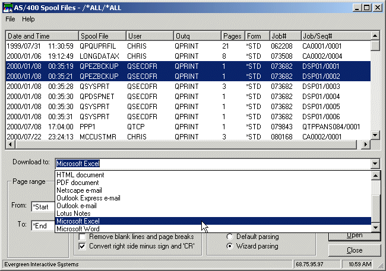
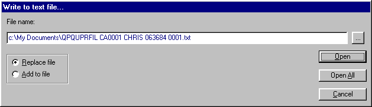

What the Downloader does New Features for Version 12.0 Contact us International
Contacts
Using the Downloader
When
launched, the Downloader will establish a connection with the iSeries.
The Downloader will also examine your PC to see if Microsoft Excel or Word is
installed. If they are, options allowing their use will be present (see
figure2.)
The
Downloader will then present the screen shown in figure 1:

Figure 1 - iSeries
Report Downloader - opening screen.
Key in the name of an iSeries outq (or you
may browse iSeries outqs.)
Alternatively, you may key in a user name. All spool files belonging to that user will
be displayed. Once you select an outq or
user you’ll be presented with a list of qualifying spool files as shown in
figure 2.

Figure 2 - The
spool files selected by user or outq and the destination for the download.
Since many spool
files look alike you may wish to preview the first few pages.
Loading a Spool File to a PC Text
File
You may load the spool file contents to PC
text file(s). The spool files are transferred without alteration. No comma
delimiting or other formatting changes are made. Records will have a maximum
length of 80, 132, 198 or 970 bytes long depending on the size of the
original spool files. The iSeries spool file attributes may be used to
create the PC text file's name, and whole groups of spool files may be sent to
PC text files for archiving purposes.
{kind=link}
When the "Text file" option is
selected, the Downloader’s text file dialog box will be displayed as shown in
figure 3.

Figure 3
- The Downloader text file dialog box.
Loading a Spool File to Microsoft
Excel
You may also import the contents of a spool
file into a Microsoft Excel spreadsheet without leaving the Downloader. The
Downloader will check to see if Excel is already running. If not, the
Downloader will start a new instance of Excel. The downloaded spool data will
then be imported into the Excel spreadsheet by commands issued from the
Downloader. In this manner you may load several iSeries spool files into Excel
at the same time – each as its own spreadsheet. Very handy for cutting and
pasting among spool files.
{kind=link}
The Downloader can optionally present Excel's parsing
Wizard so your users can explicitly define parsing specifications!
Once started, Excel will remain active even
if you’ve ended the Downloader. Normally, Excel will be minimized to the task
bar by the Downloader after the loading is finished.
Note: The iSeries Report Downloader will work
with Excel 97, Excel 2003, 2007 and 2010. The Downloader will detect Excel and
the version present on the PC.
Loading a Spool File to Excel and
Running a Macro
Through ActiveX Automation technology, the
Downloader is able to send commands to Excel telling it to load and run a
pre-recorded Excel macro over an imported iSeries spool file – all without
leaving the Downloader.
Macro
instructions are created by the user and stored on the PC under a given name.
You may specify the macro’s file and name from the Downloader and after the
spool file is imported, the macro is run. Use this feature to further automate
the downloading process. Typically macros will be used for:
Parsing the spool file data into cells
Removing
extra page headings
Enhancing
appearance
Adding
more totals to the report
Scanning
and replacing specific content
Final
printing
So with this feature of the Downloader you
can record your Excel operations into a macro once and use the macro every time
you process the same report.
Loading a Spool File to Microsoft
Word
You may also import the contents of a spool
file into a Microsoft Word document without leaving the Downloader. The
Downloader will check to see if Word is already running. If not, the Downloader
will start a new instance of Word. The downloaded spool data will then be
loaded into a Word document by commands issued from the Downloader. In this
manner you may load several iSeries spool files into Word at the same time –
each as its own document. Very handy for cutting and pasting among spool files.
Once
started, Word will remain active even if you’ve ended the Downloader. Normally,
Word will be minimized to the task bar by the Downloader after the loading is
finished.
Note:
The iSeries Report Downloader will work with MS Word 97, Word 2003, Word 2007
or Word 2010. The Downloader will detect Word and the version present on the PC.
Loading a Spool File to Microsoft
Word and Running a Macro
Through ActiveX Automation technology, the
Downloader is able to send commands to MS Word telling it to load and run a
pre-recorded Word macro over an imported iSeries spool file – all without
leaving the Downloader.
Macro
instructions are created by the user and stored on the PC under a given name.
You may specify the macro’s file and name from the Downloader and after the
spool file is loaded, the macro is run. Use this feature to further automate
the downloading process. Typically macros will be used for:
Removing extra page headings
Enhancing
appearance
Adding
features to the report
Scanning
and replacing specific content
Final
printing
So with this feature of the Downloader you
can record your Word operations into a macro once and use the macro every time
you process the same report.
To
specify a macro to be run select "Load to Word plus a macro" from the
outq contents display (see figure 3) and select the desired spool file. The
Downloader’s macro dialog box will be displayed allowing you to select a Word
template file and macro name.
See Also
Spool File Security - Controlling user
access to spool files through the Downloader
Requirements
TCP/IP
version:
PC running Windows 95/98/NT/ME/2000/XP/Vista
TCP/IP
connection to the iSeries (Ethernet, Token Ring, Internet or Point-to-Point)
OS/400 V4
or V5
SNA
version:
PC running Windows 95/98/NT/2000/XP/Vista
Client
Access/400 or Rumba for Windows 95/NT
RPG/400
compiler (v2r3 & up)
Connection
through CA or Rumba router
Pricing and Availability
|
Licenses |
TCP/IP |
SNA |
|
1 to 4 PCs |
495. ea. |
249. ea. |
|
5 to 9 PCs |
425. ea. |
239. ea. |
|
10 to 14 PCs |
350. ea |
225. ea. |
|
15 Seats and Up (iSeries serial number
license) |
4900. |
2800. |
U.S. Funds
The
iSeries Report Downloader TCP/IP and SNA versions are available by download
and/or express mail.
The
iSeries Report Downloader comes with a money-back satisfaction guarantee.
Contacting
Evergreen Interactive Systems
Toll free:
1.888.821-8218

Evergreen Interactive Systems